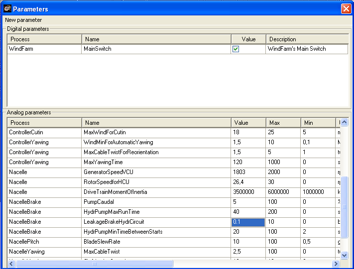
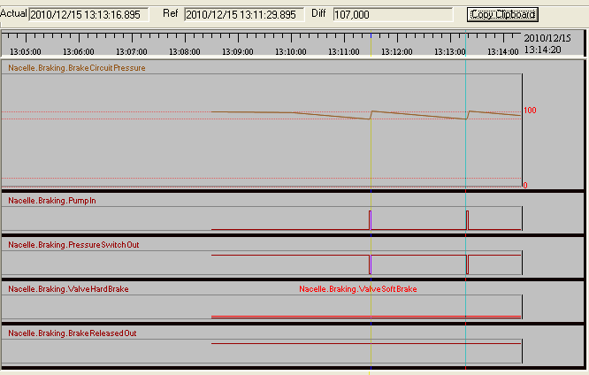
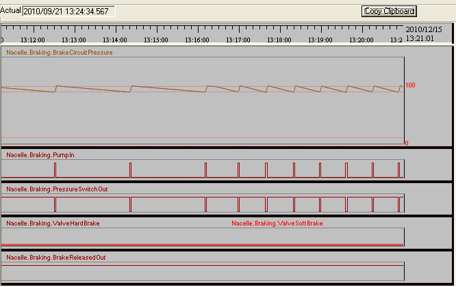
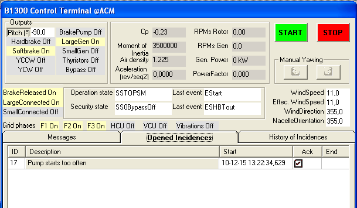

Follow the starting procedure, as in previous lessons, to drive the Wind Turbine into operation with a wind around 11 m/s.
1."Executing" form in "Synoptics" choose "StripRecorder" click "Predefined Panels" and select "Hydraulic circuit". Set the sampling rate to 1 second.
2.In SynopticDriveTrain" synoptic you must see the rpms and hydraulic pressure widgets; if this is not the case, select "Expand" in the menu bar.
3.The hydraulic pressure is simulated in percentage, so zero means no hydraulic pressure. In that situation the spring is the only acting force and so the caliper is fully pressing the brake pads against the disk, and 100% means that the caliper is open and the brake pads are at the maximum distance from the disk.
4.In normal operation, the "Presure Switch" is on, meaning that there is enough pressure in the circuit to maintain the brake liberated.
We are going to increase the leakage of the hydraulic circuit to simulate a faulty valve, or any other malfunction due to a perforated sleeve or a bad gasket.
1.Go to "Executing", in "Synoptics" choose "Parameters" in the "Analog parameters" section, click on the header "Process" to sort this column. In "NacelleBrake" change the parameter "LeakageBrakeHydrCircuit" to "0.1".

2.Observe the strip recorder: when the pressure falls below a level (green zone in the pressure widget) the Controller starts the pump to fill the hydraulic cylinder to the 100%.

3.Now change the parameter "LeakageBrakeHydrCircuit" to 0.3.
In the hydraulic pressure widgets of the "SynopticDriveTrain" note that the hydraulic system pressure is maintained with frequent pump starts in the green zone.

4.Change the parameter to a high value, "0.7" for instance. As soon as the time between pump starts is less than the value of the parameter "HydrPumpMinTimeBetweenStarts" the controller issues a "Pump starts too often" incidence that stops the Wind Turbine and needs to be acknowledged by the Operator.
